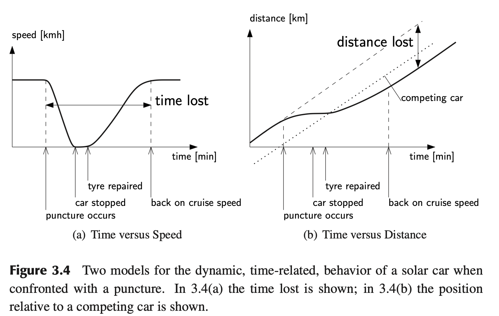
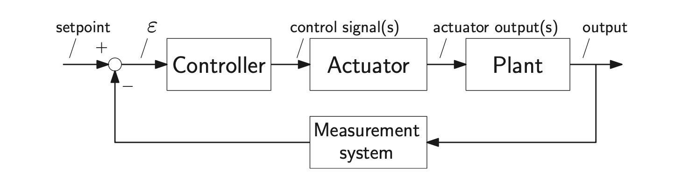
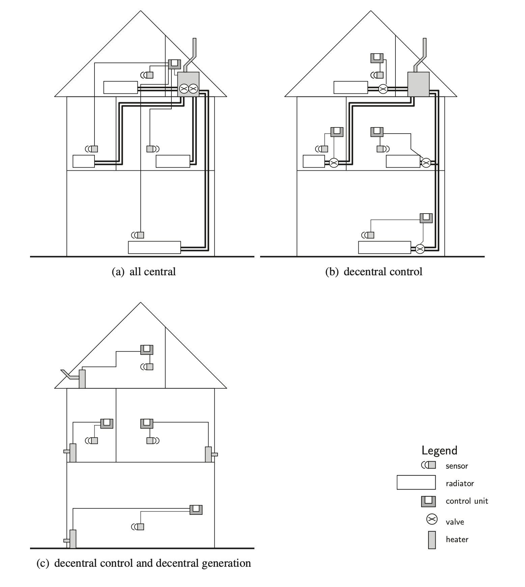
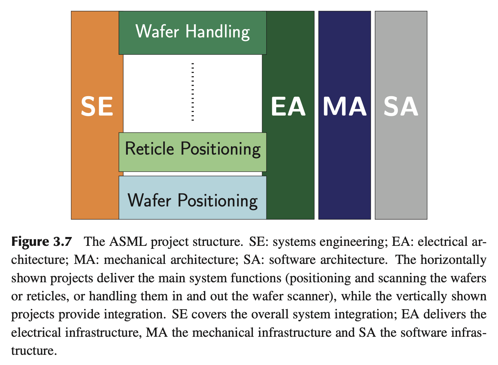

Based on Chapter 3 of the SDE book.
Dynamic Thinking
The systems designed by system designers and systems engineers are not monolithic invariant systems. They interact with the environment and are often highly dynamic. Looking at the system from a dynamic perspective is thus essential:
- How does the system change over time?
- How does the environment change over time?
- When a change in input or output occurs, what are the effects?
Simple tools can be used to plot the inputs and outputs over time. The use of a number of different time scales is essential, depending on the type of system and duration of seconds to years.
An example is the solar racer from the Twente Solar Team. Here interesting time scales are:
- Seconds: how does the car react to vibrations due to small unbalances and road surface damages?
- Minutes: how does the weather change, and what is the effect of wind gusts? How will it react to a puncture?
- Hours: driver behavior and feeding and short-term strategy;
- Days: overall strategy and race planning, including foraging, camp planning vehicle manning etc.
- Weeks: project planning and manufacturing, communication strategy.
- Months: financial planning, motivation, training and overall project planning.

Feedback Thinking
This is really related to control engineering. You have the S.U.D. called “Plant” and based on feedback coming from sensors, we compute an error and try to minimize it as much as possible (0, ideally). The error computes control signals for the actuators which actually control the plant.

Specific-Generic Thinking
Specific-Generic thinking is about the scale of the problem and of the solution. Is it worth devising an automated system to level a painting on a wall, when doing it by hand once a month will do?
Operational Thinking
Makes these stories in a form presentable to experts, and to people who have experience with operating comparable systems. Meet and talk with them, or even better, involve the operators in this process. There is a wealth of practical information available from the operators. System Engineers sometimes have a fear going to the operators. Overcome that fear.
Scales Thinking
This way of thinking can be put to use for the system thinker in two ways. A stuck argument, that is in two (or three) camps, can be resolved by analyzing the grey scales between the two camps. On the other hand, when there is too much nuance (or uncertainty), one can find the pain barrier by increasing the limits further in a thought experiment (SE: systems engineer, E: expert):
SE: How much power will you need for this function?
E: I have no idea
SE: Oh. Well, can you make an estimate?
E: No, really, I don’t know.
SE: Hmm, shall I put, 500 W then?
E: No, that is way too much.
SE: Right, is it more like 50W?
E: Well, 50 W may be a bit too little.
SE: What power do you think then. Or can you give a range?
E: It will be somewhere between 75 and 100 W.
Scientific Thinking
In systems engineering and systems thinking, it is important to use scientific principles:
- Formulate a question.
- Formulate a hypothesis that can include a theory that explains the phenomenon observed.
- Create a model that can be used to predict behaviour.
- Verify the hypothesis and thus the model, by means of:
- Simulations.
- Experiments.
- Consulting literature.
- Consulting experts.
- Analyze the results and adjust the model if necessary.
- Adjust the theory if necessary.
One particular issue is that increasing the number of measurements improves the accuracy (by reducing the error margin with a factor of for independent measurements). However, a systematic error cannot be reduced by repeated measurements.
Decomposition-Composition Thinking
In many cases, systems engineering is presented as a way to determine how the system can be decomposed in subsystems, assemblies, parts, and components.
What often is left untreated in education is how can all these be integrated into a well-functioning system. And how can, in the whole process, the integrity be safeguarded?
Top-level functions have to be allocated to subsystems, creating interfaces between these subsystems.
A less formal view by the systems engineer or system designer is then essential. He has to ask questions like:
- How do we put this together?
- How do we check whether it will fit before shipping the parts and building on-site?
- Is there an easy way to see whether a module is finished?
- Can each module be tested before integrating into the system? If not, what test setup is needed?
Managing and monitoring the interfaces between parts, and between the electronics, mechanics, optics, and software are crucial in this matter.
The system designer has to be aware that the total system is not on most designers’ minds. The total system should worry the system designer very much; in fact, it should be his main worry.
A simple way is to let the electronics designer draw the subsystem from his point of view, including the interfaces with mechanics and software. Then let the mechanical engineer do the same, and then the software engineer. In most cases there will be discrepancies. If identified early, they are easily solved. It is important before to let them draw, do not leave it to describing a project in words.
Questions to ask the designers:
- If you start detailing the design, what information do you need from software, electronics, mechanics or optics?
- In what format do you expect that information?
- What kinds of connectors and fasteners do you use?
- If you have the first prototype, what hardware and software do you need to debug, test and validate it?
In particular, look for deadlock situations where developers have to wait for each others’ information or need each others’ deliverables.
Hierarchical Thinking

As seen in the example, the hierarchical reasoning can be applied to control, and also to generation and actuation. In a traditional car, there is only one engine. An electrical car can easily have an electrical motor in each wheel, thus providing four-wheel drive. Central control reduces the number of signals, but increases the number of power lines or power shafts. Localized control does the opposite.
Organizational Thinking
Too many hierarchical layers in a project structure can hamper communication just as too many interface layers can hamper quick responses in a real-time control system. Depending on the size and required agility of the development, the organization structure should be relatively flat.

Product Life-Cycle Thinking
For mass-production goods, emphasis has to be put on the production and distribution. For one-off products like space systems, distribution is less critical, but the way the system is put into use is critical. For civil engineering, the design and production phase are very critical; in particular the impact of the production phase has to be considered: the addition of an extra traffic lane for a highway must exert minimal impact on normal traffic during rush hour in the production phase.
Safety Thinking
The systems engineer has to reason about how the product can be used whether use is safe, in what ways the product can be used unsafely.
It may be wise to create points of failure, to avoid failure in awkward or dangerous parts of the system. Examples are circuit breakers in electrical systems. These are the weakest links in the circuit designed to prevent overheating or worse in other parts of the circuits. A mechanical example is a breaking pin (like a wooden pole) to connect a plow to a tractor. When the plow hits a rock, the pin breaks and the rest of the machinery remains intact.
Risk Thinking
It is always a gamble. Avoiding risks will automatically lead to dull and non-discerning products and thus to less profit or even loss.
Types of risks:
- Technical: the system or a part does not function or is not accurate, reliable, fast or efficient enough
- Cost: development costs are not according to plan (this can be due to technical risks) or materials are more expensive than expected
- Planning: the planning is not as expected: the delivery date is shifted forward or backward
- Program: decisions are made outside the project, at management level; for instance the priority is shifted
And ways to handle them..
- Avoiding: finding an alternative solution where the risk does not occur
- Containing: analyzing the risk thoroughly, then taking each step very carefully, and making sure that everything is done to contain the risk from increasing and causing a chain of negative effects
- Taking: taking the risk; this may be necessary when there is no alternative
- Delegating: the risk is taken, but the consequences are made someone else’s responsibility. This can be a good option when the development project is a large joint venture. Sometimes even the risk can be imposed upon the end user (read the end user-license agreement that accompanies software)